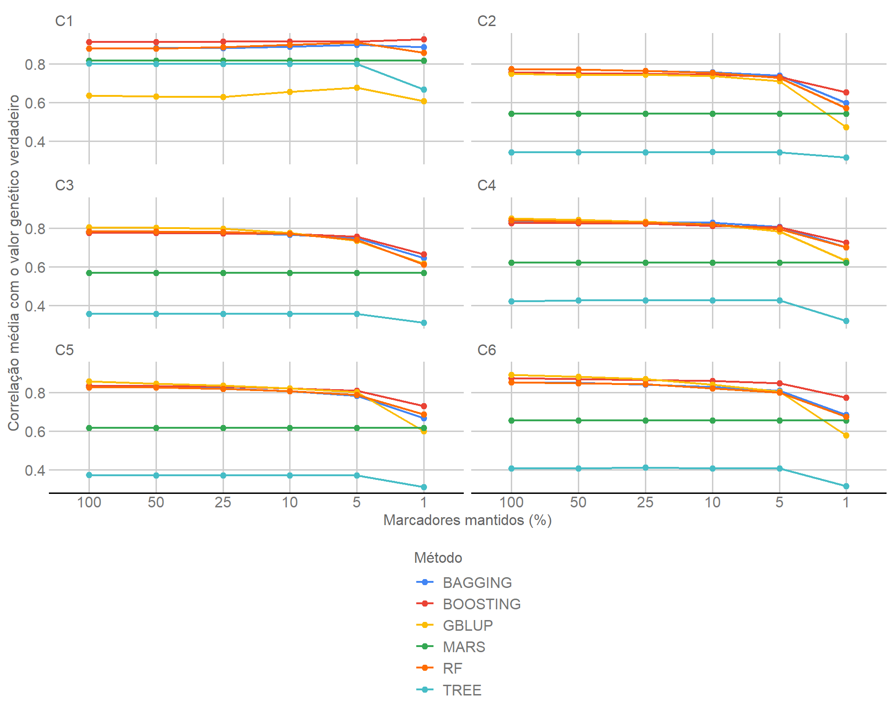
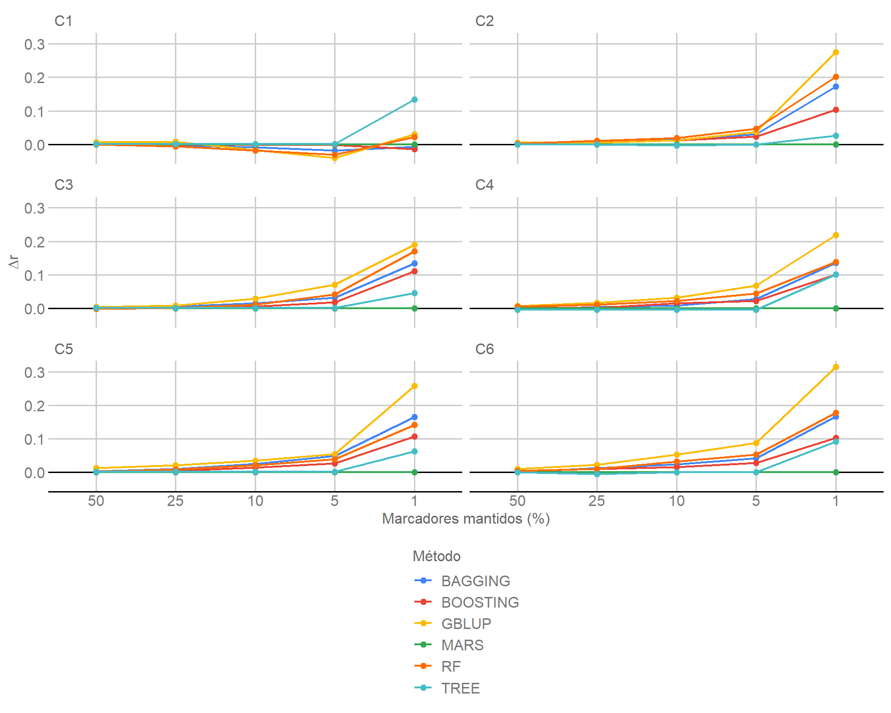
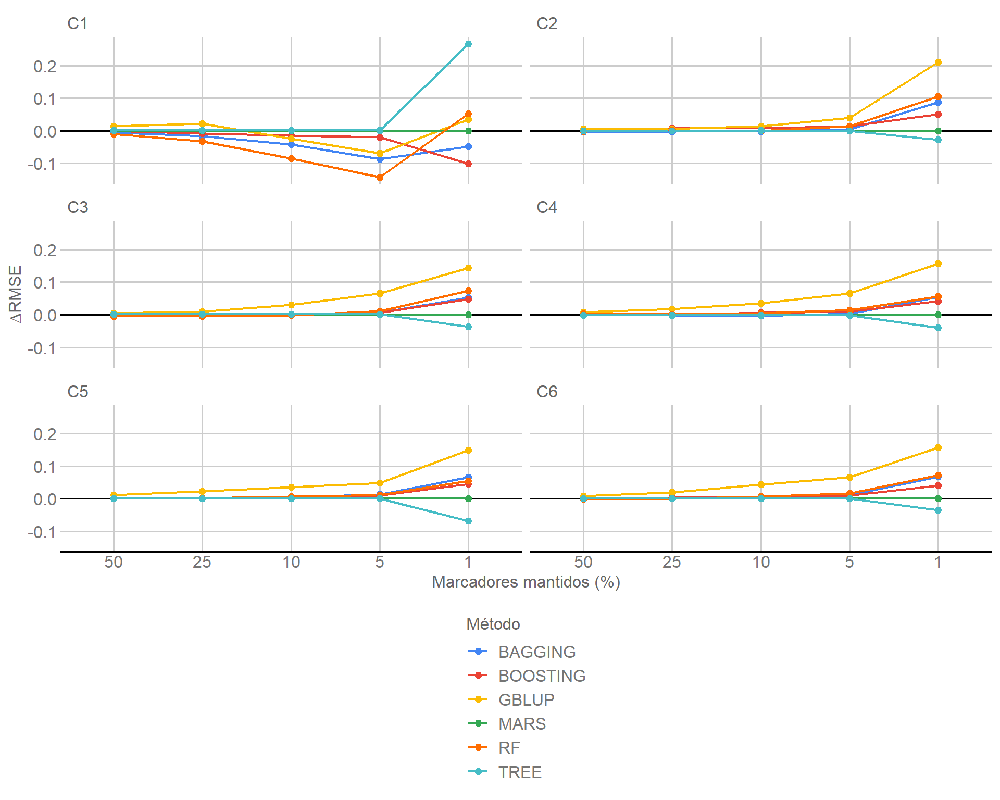

Last updated: 2026-09-10
Checks: 6 1
Knit directory:
Robustez-Predicao-Genomica-n-p/
This reproducible R Markdown analysis was created with workflowr (version 1.7.2). The Checks tab describes the reproducibility checks that were applied when the results were created. The Past versions tab lists the development history.
The R Markdown file has unstaged changes. To know which version of
the R Markdown file created these results, you’ll want to first commit
it to the Git repo. If you’re still working on the analysis, you can
ignore this warning. When you’re finished, you can run
wflow_publish to commit the R Markdown file and build the
HTML.
Great job! The global environment was empty. Objects defined in the global environment can affect the analysis in your R Markdown file in unknown ways. For reproduciblity it’s best to always run the code in an empty environment.
The command set.seed(20260908) was run prior to running
the code in the R Markdown file. Setting a seed ensures that any results
that rely on randomness, e.g. subsampling or permutations, are
reproducible.
Great job! Recording the operating system, R version, and package versions is critical for reproducibility.
Nice! There were no cached chunks for this analysis, so you can be confident that you successfully produced the results during this run.
Great job! Using relative paths to the files within your workflowr project makes it easier to run your code on other machines.
Great! You are using Git for version control. Tracking code development and connecting the code version to the results is critical for reproducibility.
The results in this page were generated with repository version d9e7edf. See the Past versions tab to see a history of the changes made to the R Markdown and HTML files.
Note that you need to be careful to ensure that all relevant files for
the analysis have been committed to Git prior to generating the results
(you can use wflow_publish or
wflow_git_commit). workflowr only checks the R Markdown
file, but you know if there are other scripts or data files that it
depends on. Below is the status of the Git repository when the results
were generated:
Ignored files:
Ignored: .Rproj.user/
Ignored: .local/
Ignored: renv/library/
Ignored: renv/staging/
Unstaged changes:
Modified: analysis/04_comparacao_robustez.Rmd
Note that any generated files, e.g. HTML, png, CSS, etc., are not included in this status report because it is ok for generated content to have uncommitted changes.
These are the previous versions of the repository in which changes were
made to the R Markdown
(analysis/04_comparacao_robustez.Rmd) and HTML
(docs/04_comparacao_robustez.html) files. If you’ve
configured a remote Git repository (see ?wflow_git_remote),
click on the hyperlinks in the table below to view the files as they
were in that past version.
| File | Version | Author | Date | Message |
|---|---|---|---|---|
| Rmd | eb6c91a | WevertonGomesCosta | 2026-09-09 | Complete marker reduction robustness analysis |
| html | eb6c91a | WevertonGomesCosta | 2026-09-09 | Complete marker reduction robustness analysis |
| html | c8bee6d | WevertonGomesCosta | 2026-09-08 | Build site. |
| html | 73e1863 | WevertonGomesCosta | 2026-09-08 | Build site. |
| Rmd | 7307330 | WevertonGomesCosta | 2026-09-08 | Configure initial tutorial structure and simulated data |
Este é o quarto módulo do tutorial. O objetivo é integrar os resultados do GBLUP e dos cinco métodos de aprendizado de máquina em uma mesma estrutura de comparação, avaliando simultaneamente:
A Fase 1 mantém fixo o número de indivíduos:
\[ n = 1000. \]
Apenas o número de marcadores varia:
\[ p \in \{ 4010,\ 2005,\ 1003,\ 401,\ 201,\ 40 \}, \]
correspondendo a:
\[ 100\%,\ 50\%,\ 25\%,\ 10\%,\ 5\%,\ 1\%. \]
Os seis métodos comparados são:
O resultado científico oficial desta etapa está armazenado em
output/comparacao_robustez/module04_comparacao_p_results.rds
e segue o contrato M04-p-v1. Este tutorial não
altera esse objeto. Todas as tabelas e figuras são construídas
a partir dos resultados oficiais já auditados.
Os Módulos 2 e 3 produziram resultados para exatamente o mesmo desenho de validação cruzada definido no Módulo 1.
Para cada cenário, existem cinco folds. Em cada fold:
p;A unidade elementar da comparação é:
\[ \text{cenário} \times \text{fold} \times \text{método} \times \text{nível de }p. \]
Como existem 6 cenários, 5 folds, 6 métodos e 6 níveis de
p, o M04 reúne:
\[ 6 \times 5 \times 6 \times 6 = 1080 \]
resultados individuais.
Esses 1.080 resultados são decompostos em:
\[ 180_{\mathrm{GBLUP}} + 900_{\mathrm{ML}} = 1080. \]
O M04 depende apenas dos produtos versionados dos módulos anteriores e de seu próprio resultado oficial. Não é necessário reconstruir a comparação a partir de checkpoints intermediários de computação.
O bloco seguinte carrega os objetos oficiais e verifica seus contratos antes de qualquer tabela ou figura.
arquivo_m01 <-
"output/dados_desenho/desenho_analise.rds"
arquivo_m02 <-
"output/gblup/module02_gblup_results.rds"
arquivo_m03 <-
"output/aprendizado_maquina/module03_ml_results.rds"
arquivo_m04 <-
"output/comparacao_robustez/module04_comparacao_p_results.rds"
stopifnot(
file.exists(arquivo_m01),
file.exists(arquivo_m02),
file.exists(arquivo_m03),
file.exists(arquivo_m04)
)
dados <- readRDS(
arquivo_m01
)
resultado_m02 <- readRDS(
arquivo_m02
)
resultado_m03 <- readRDS(
arquivo_m03
)
resultado_m04 <- readRDS(
arquivo_m04
)
stopifnot(
identical(
dados$versao,
"M01-p-v1"
),
identical(
resultado_m02$versao,
"M02-p-v1"
),
identical(
resultado_m03$versao,
"M03-p-v1"
),
identical(
resultado_m04$versao,
"M04-p-v1"
),
identical(
resultado_m04$fase,
"reducao_p_com_n_1000"
)
)Os quatro objetos formam a cadeia científica do tutorial: M01 define os dados e o desenho; M02 fornece os 180 resultados do GBLUP; M03 fornece os 900 resultados de aprendizado de máquina; e M04 integra a comparação.
A tabela seguinte resume os papéis e as dimensões centrais de cada produto oficial.
tabela_objetos <- data.frame(
Módulo = c(
"M01",
"M02",
"M03",
"M04"
),
Contrato = c(
dados$versao,
resultado_m02$versao,
resultado_m03$versao,
resultado_m04$versao
),
Papel = c(
"Dados, cenários, folds e níveis de p",
"Resultados do GBLUP",
"Resultados dos cinco métodos de ML",
"Comparação integrada dos seis métodos"
),
Resultados = c(
NA_integer_,
nrow(resultado_m02$resultados),
nrow(resultado_m03$resultados),
nrow(resultado_m04$resultados)
),
stringsAsFactors = FALSE
)
kableExtra::kbl(
tabela_objetos,
caption = "Objetos oficiais utilizados no Módulo 4",
align = c("c", "c", "l", "r")
) |>
kableExtra::kable_styling(
bootstrap_options = c(
"striped",
"hover",
"condensed",
"responsive"
),
full_width = FALSE,
position = "center"
)| Módulo | Contrato | Papel | Resultados |
|---|---|---|---|
| M01 | M01-p-v1 | Dados, cenários, folds e níveis de p | NA |
| M02 | M02-p-v1 | Resultados do GBLUP | 180 |
| M03 | M03-p-v1 | Resultados dos cinco métodos de ML | 900 |
| M04 | M04-p-v1 | Comparação integrada dos seis métodos | 1080 |
A tabela mostra que o M04 não substitui os módulos anteriores. Ele utiliza seus produtos oficiais para realizar a comparação global e preservar a rastreabilidade da análise.
Antes de comparar os métodos, verificamos se o objeto integrado contém todas as combinações previstas pelo desenho.
O código seguinte transforma as dimensões registradas no contrato em uma tabela de leitura direta.
tabela_dimensoes <- data.frame(
Componente = c(
"Cenários",
"Folds",
"Métodos",
"Níveis de p",
"Resultados GBLUP",
"Resultados ML",
"Resultados totais"
),
Valor = c(
resultado_m04$dimensoes$cenarios,
resultado_m04$dimensoes$folds,
resultado_m04$dimensoes$metodos,
resultado_m04$dimensoes$niveis_p,
resultado_m04$dimensoes$resultados_gblup,
resultado_m04$dimensoes$resultados_ml,
resultado_m04$dimensoes$resultados
),
stringsAsFactors = FALSE
)
stopifnot(
all(
tabela_dimensoes$Valor ==
c(
6L,
5L,
6L,
6L,
180L,
900L,
1080L
)
)
)
kableExtra::kbl(
tabela_dimensoes,
caption = "Dimensões registradas no contrato científico do M04",
align = c("l", "r")
) |>
kableExtra::kable_styling(
bootstrap_options = c(
"striped",
"hover",
"condensed"
),
full_width = FALSE,
position = "center"
)| Componente | Valor |
|---|---|
| Cenários | 6 |
| Folds | 5 |
| Métodos | 6 |
| Níveis de p | 6 |
| Resultados GBLUP | 180 |
| Resultados ML | 900 |
| Resultados totais | 1080 |
As dimensões confirmam a decomposição esperada: 180 resultados do GBLUP mais 900 resultados dos cinco métodos de aprendizado de máquina, totalizando 1.080 células científicas.
O M04 não altera as configurações dos modelos. Seu papel é comparar resultados que já foram produzidos sob os contratos dos Módulos 2 e 3.
O bloco abaixo apresenta os elementos do protocolo que controlam a comparação de robustez.
tabela_protocolo <- data.frame(
Item = c(
"Número de indivíduos",
"Redução de n",
"Redução de p",
"Métrica principal",
"Métricas secundárias",
"Definição de delta r",
"Definição de delta RMSE",
"Resumo entre folds"
),
Valor = c(
as.character(
resultado_m04$protocolo$n_fixo
),
as.character(
resultado_m04$protocolo$reducao_n
),
as.character(
resultado_m04$protocolo$reducao_p
),
resultado_m04$protocolo$metrica_principal,
paste(
resultado_m04$protocolo$metricas_secundarias,
collapse = ", "
),
resultado_m04$protocolo$delta_r,
resultado_m04$protocolo$delta_rmse,
resultado_m04$protocolo$resumo_folds
),
stringsAsFactors = FALSE
)
kableExtra::kbl(
tabela_protocolo,
caption = "Contrato científico da comparação de robustez",
align = c("l", "l")
) |>
kableExtra::kable_styling(
bootstrap_options = c(
"striped",
"hover",
"condensed",
"responsive"
),
full_width = FALSE,
position = "center"
)| Item | Valor |
|---|---|
| Número de indivíduos | 1000 |
| Redução de n | FALSE |
| Redução de p | TRUE |
| Métrica principal | r_true_g |
| Métricas secundárias | rmse_true_g, mae_true_g, bias_true_g, slope_true_g, r2_true_g |
| Definição de delta r | r_100 - r_q |
| Definição de delta RMSE | RMSE_q - RMSE_100 |
| Resumo entre folds | media e desvio-padrao entre 5 folds |
O protocolo deixa explícito que esta fase reduz somente
p. A redução de n não faz parte desta análise,
e cada painel reduzido é comparado ao painel de 100% do mesmo cenário,
método e fold.
Os seis tamanhos de painel são armazenados no próprio contrato do M04. O código seguinte os organiza em uma tabela.
tabela_p <- data.frame(
Percentual = as.integer(
names(
resultado_m04$protocolo$paineis_p
)
),
SNPs = as.integer(
resultado_m04$protocolo$paineis_p
),
stringsAsFactors = FALSE
)
tabela_p <- tabela_p[
order(
-tabela_p$Percentual
),
,
drop = FALSE
]
rownames(
tabela_p
) <- NULL
kableExtra::kbl(
tabela_p,
caption = "Níveis de p utilizados na comparação",
col.names = c(
"Marcadores mantidos (%)",
"Número de SNPs"
),
align = c("r", "r")
) |>
kableExtra::kable_styling(
bootstrap_options = c(
"striped",
"hover",
"condensed"
),
full_width = FALSE,
position = "center"
)| Marcadores mantidos (%) | Número de SNPs |
|---|---|
| 100 | 4010 |
| 50 | 2005 |
| 25 | 1003 |
| 10 | 401 |
| 5 | 201 |
| 1 | 40 |
Os painéis variam de 4.010 SNPs no conjunto completo a 40 SNPs no nível mais extremo de redução.
A principal correção arquitetural deste tutorial é que a consolidação pode ser reproduzida diretamente a partir dos objetos oficiais M02 e M03.
O código seguinte empilha os 180 resultados do GBLUP e os 900 resultados de aprendizado de máquina. Depois, ordena a tabela e compara o conteúdo com os 1.080 resultados armazenados no M04.
resultados_reconstruidos <- rbind(
resultado_m02$resultados,
resultado_m03$resultados
)
ordem_reconstruidos <- order(
resultados_reconstruidos$cenario,
resultados_reconstruidos$fold,
resultados_reconstruidos$metodo,
resultados_reconstruidos$percentual_p
)
ordem_m04 <- order(
resultado_m04$resultados$cenario,
resultado_m04$resultados$fold,
resultado_m04$resultados$metodo,
resultado_m04$resultados$percentual_p
)
resultados_reconstruidos <-
resultados_reconstruidos[
ordem_reconstruidos,
,
drop = FALSE
]
resultados_m04_ordenados <-
resultado_m04$resultados[
ordem_m04,
,
drop = FALSE
]
rownames(
resultados_reconstruidos
) <- NULL
rownames(
resultados_m04_ordenados
) <- NULL
stopifnot(
nrow(
resultados_reconstruidos
) == 1080L,
identical(
names(
resultados_reconstruidos
),
names(
resultados_m04_ordenados
)
),
identical(
resultados_reconstruidos,
resultados_m04_ordenados
)
)A identidade entre as duas tabelas demonstra que os resultados integrados do M04 são exatamente a união dos produtos oficiais do GBLUP e dos métodos de aprendizado de máquina.
Além da identidade global, cada combinação de cenário, fold, método e
nível de p deve aparecer uma única vez.
O bloco seguinte cria a chave científica de cada linha e verifica duplicações.
chave_m04 <- paste(
resultado_m04$resultados$cenario,
resultado_m04$resultados$fold,
resultado_m04$resultados$metodo,
resultado_m04$resultados$percentual_p,
sep = "::"
)
stopifnot(
length(
chave_m04
) == 1080L,
anyDuplicated(
chave_m04
) == 0L,
all(
resultado_m04$resultados$n_treino == 800L
),
all(
resultado_m04$resultados$n_teste == 200L
)
)A ausência de chaves duplicadas garante que nenhuma célula científica foi repetida ou perdida durante a consolidação.
Para tornar a auditoria visível, a tabela seguinte apresenta as
contagens por método, cenário e nível de p.
contagem_metodo <- as.data.frame(
table(
resultado_m04$resultados$metodo
),
stringsAsFactors = FALSE
)
names(
contagem_metodo
) <- c(
"Categoria",
"Resultados"
)
contagem_metodo$Dimensão <- "Método"
contagem_cenario <- as.data.frame(
table(
resultado_m04$resultados$cenario
),
stringsAsFactors = FALSE
)
names(
contagem_cenario
) <- c(
"Categoria",
"Resultados"
)
contagem_cenario$Dimensão <- "Cenário"
contagem_p <- as.data.frame(
table(
resultado_m04$resultados$percentual_p
),
stringsAsFactors = FALSE
)
names(
contagem_p
) <- c(
"Categoria",
"Resultados"
)
contagem_p$Dimensão <- "Percentual de p"
tabela_contagens <- rbind(
contagem_metodo,
contagem_cenario,
contagem_p
)
tabela_contagens <- tabela_contagens[
,
c(
"Dimensão",
"Categoria",
"Resultados"
)
]
rownames(
tabela_contagens
) <- NULL
kableExtra::kbl(
tabela_contagens,
caption = "Contagem das células científicas do M04",
align = c("l", "c", "r")
) |>
kableExtra::kable_styling(
bootstrap_options = c(
"striped",
"hover",
"condensed"
),
full_width = FALSE,
position = "center"
)| Dimensão | Categoria | Resultados |
|---|---|---|
| Método | BAGGING | 180 |
| Método | BOOSTING | 180 |
| Método | GBLUP | 180 |
| Método | MARS | 180 |
| Método | RF | 180 |
| Método | TREE | 180 |
| Cenário | C1 | 180 |
| Cenário | C2 | 180 |
| Cenário | C3 | 180 |
| Cenário | C4 | 180 |
| Cenário | C5 | 180 |
| Cenário | C6 | 180 |
| Percentual de p | 1 | 180 |
| Percentual de p | 5 | 180 |
| Percentual de p | 10 | 180 |
| Percentual de p | 25 | 180 |
| Percentual de p | 50 | 180 |
| Percentual de p | 100 | 180 |
Cada método, cenário e nível de p possui 180 resultados,
como exige o desenho balanceado da Fase 1.
A métrica principal é a correlação entre o valor genético verdadeiro e a predição:
\[ r = \operatorname{cor} \left( \mathbf{g}, \widehat{\mathbf{g}} \right). \]
Para cada combinação de cenário, método e fold, o desempenho com 100% dos SNPs é usado como referência.
A mudança na correlação é definida por:
\[ \Delta r_q = r_{100\%} - r_q. \]
Assim:
Para o RMSE:
\[ \Delta RMSE_q = RMSE_q - RMSE_{100\%}. \]
Nesse caso, valores positivos indicam aumento do erro.
Antes de trabalhar com todas as 1.080 linhas, o código seguinte
mostra a lógica em uma única combinação. Selecionamos C1, fold 1 e GBLUP
e organizamos os seis níveis de p.
exemplo_delta <- resultado_m04$resultados[
resultado_m04$resultados$cenario == "C1" &
resultado_m04$resultados$fold == 1L &
resultado_m04$resultados$metodo == "GBLUP",
,
drop = FALSE
]
exemplo_delta <- exemplo_delta[
order(
-exemplo_delta$percentual_p
),
,
drop = FALSE
]
stopifnot(
nrow(
exemplo_delta
) == 6L,
exemplo_delta$r_baseline[
exemplo_delta$percentual_p == 100L
] ==
exemplo_delta$r_true_g[
exemplo_delta$percentual_p == 100L
]
)
exemplo_delta$delta_r_recalculado <-
exemplo_delta$r_baseline -
exemplo_delta$r_true_g
exemplo_delta$delta_rmse_recalculado <-
exemplo_delta$rmse_true_g -
exemplo_delta$rmse_baseline
stopifnot(
isTRUE(
all.equal(
exemplo_delta$delta_r,
exemplo_delta$delta_r_recalculado,
tolerance = 1e-12
)
),
isTRUE(
all.equal(
exemplo_delta$delta_rmse,
exemplo_delta$delta_rmse_recalculado,
tolerance = 1e-12
)
)
)Esse exemplo confirma, em uma combinação concreta, que os deltas são calculados sempre em relação ao painel completo do próprio método, cenário e fold.
A tabela a seguir mantém apenas as colunas necessárias para observar
a mudança de desempenho ao reduzir p.
tabela_exemplo_delta <- exemplo_delta[
,
c(
"percentual_p",
"p",
"r_true_g",
"r_baseline",
"delta_r",
"rmse_true_g",
"rmse_baseline",
"delta_rmse"
)
]
names(
tabela_exemplo_delta
) <- c(
"p (%)",
"SNPs",
"r",
"r baseline",
"Delta r",
"RMSE",
"RMSE baseline",
"Delta RMSE"
)
kableExtra::kbl(
tabela_exemplo_delta,
digits = 4,
caption = "Exemplo do cálculo de robustez para C1, fold 1 e GBLUP",
align = c(
"r",
"r",
"r",
"r",
"r",
"r",
"r",
"r"
)
) |>
kableExtra::kable_styling(
bootstrap_options = c(
"striped",
"hover",
"condensed",
"responsive"
),
full_width = FALSE,
position = "center"
)| p (%) | SNPs | r | r baseline | Delta r | RMSE | RMSE baseline | Delta RMSE |
|---|---|---|---|---|---|---|---|
| 100 | 4010 | 0.6206 | 0.6206 | 0.0000 | 1.4825 | 1.4825 | 0.0000 |
| 50 | 2005 | 0.6182 | 0.6206 | 0.0024 | 1.5060 | 1.4825 | 0.0235 |
| 25 | 1003 | 0.6225 | 0.6206 | -0.0020 | 1.5117 | 1.4825 | 0.0292 |
| 10 | 401 | 0.6471 | 0.6206 | -0.0265 | 1.4614 | 1.4825 | -0.0211 |
| 5 | 201 | 0.6613 | 0.6206 | -0.0407 | 1.4294 | 1.4825 | -0.0531 |
| 1 | 40 | 0.6506 | 0.6206 | -0.0300 | 1.4375 | 1.4825 | -0.0450 |
A linha de 100% tem deltas iguais a zero por definição. As demais linhas medem a distância entre cada painel reduzido e essa referência.
As 1.080 linhas individuais são resumidas entre os cinco folds para
cada combinação de cenário, método e nível de p.
O objeto oficial contém 216 combinações:
\[ 6_{\mathrm{cenários}} \times 6_{\mathrm{métodos}} \times 6_{\mathrm{níveis\ de}\ p} = 216. \]
O bloco seguinte valida o tamanho do resumo e verifica que cada célula resumida é baseada em cinco folds.
stopifnot(
nrow(
resultado_m04$resumo
) == 216L,
all(
resultado_m04$resumo$n_r == 5L
),
all(
resultado_m04$resumo$n_rmse == 5L
),
all(
resultado_m04$resumo$n.x == 5L
),
all(
resultado_m04$resumo$n.y == 5L
)
)
chave_resumo <- paste(
resultado_m04$resumo$cenario,
resultado_m04$resumo$metodo,
resultado_m04$resumo$percentual_p,
sep = "::"
)
stopifnot(
anyDuplicated(
chave_resumo
) == 0L
)A validação confirma que cada média e cada desvio-padrão do M04 sintetizam cinco resultados de validação cruzada.
Para tornar a operação transparente, recalculamos manualmente a célula C1, GBLUP e 100% a partir das cinco linhas individuais.
dados_exemplo_resumo <-
resultado_m04$resultados[
resultado_m04$resultados$cenario == "C1" &
resultado_m04$resultados$metodo == "GBLUP" &
resultado_m04$resultados$percentual_p == 100L,
,
drop = FALSE
]
linha_oficial_resumo <-
resultado_m04$resumo[
resultado_m04$resumo$cenario == "C1" &
resultado_m04$resumo$metodo == "GBLUP" &
resultado_m04$resumo$percentual_p == 100L,
,
drop = FALSE
]
stopifnot(
nrow(
dados_exemplo_resumo
) == 5L,
nrow(
linha_oficial_resumo
) == 1L
)
media_r_exemplo <- mean(
dados_exemplo_resumo$r_true_g
)
sd_r_exemplo <- stats::sd(
dados_exemplo_resumo$r_true_g
)
media_rmse_exemplo <- mean(
dados_exemplo_resumo$rmse_true_g
)
sd_rmse_exemplo <- stats::sd(
dados_exemplo_resumo$rmse_true_g
)
stopifnot(
isTRUE(
all.equal(
media_r_exemplo,
linha_oficial_resumo$media_r,
tolerance = 1e-12
)
),
isTRUE(
all.equal(
sd_r_exemplo,
linha_oficial_resumo$sd_r,
tolerance = 1e-12
)
),
isTRUE(
all.equal(
media_rmse_exemplo,
linha_oficial_resumo$media_rmse,
tolerance = 1e-12
)
),
isTRUE(
all.equal(
sd_rmse_exemplo,
linha_oficial_resumo$sd_rmse,
tolerance = 1e-12
)
)
)Esse cálculo explícito mostra que as estatísticas públicas são médias e desvios-padrão entre os cinco folds, e não médias entre indivíduos do conjunto de teste.
Antes de estudar a robustez, é necessário observar o desempenho de cada método sem redução de marcadores.
O objeto baseline_p100 contém uma linha para cada
combinação entre os seis cenários e os seis métodos.
tabela_p100 <- resultado_m04$baseline_p100
tabela_p100 <- tabela_p100[
order(
tabela_p100$cenario,
-tabela_p100$media_r
),
,
drop = FALSE
]
rownames(
tabela_p100
) <- NULL
kableExtra::kbl(
tabela_p100,
digits = 4,
caption = "Desempenho médio com 100% dos marcadores",
col.names = c(
"Cenário",
"Método",
"r médio",
"DP de r",
"RMSE médio",
"DP do RMSE"
),
align = c(
"c",
"l",
"r",
"r",
"r",
"r"
)
) |>
kableExtra::kable_styling(
bootstrap_options = c(
"striped",
"hover",
"condensed",
"responsive"
),
full_width = FALSE,
position = "center"
) |>
kableExtra::scroll_box(
height = "450px"
)| Cenário | Método | r médio | DP de r | RMSE médio | DP do RMSE |
|---|---|---|---|---|---|
| C1 | BOOSTING | 0.9130 | 0.0120 | 0.9646 | 0.0541 |
| C1 | BAGGING | 0.8792 | 0.0141 | 0.9500 | 0.0609 |
| C1 | RF | 0.8789 | 0.0141 | 0.9543 | 0.0651 |
| C1 | MARS | 0.8154 | 0.0296 | 1.1265 | 0.0937 |
| C1 | TREE | 0.8010 | 0.0370 | 1.1777 | 0.1305 |
| C1 | GBLUP | 0.6364 | 0.0199 | 1.5069 | 0.0173 |
| C2 | RF | 0.7736 | 0.0132 | 0.6775 | 0.0238 |
| C2 | BAGGING | 0.7695 | 0.0132 | 0.6806 | 0.0221 |
| C2 | BOOSTING | 0.7555 | 0.0132 | 0.6960 | 0.0254 |
| C2 | GBLUP | 0.7480 | 0.0287 | 0.6351 | 0.0256 |
| C2 | MARS | 0.5427 | 0.0598 | 0.8150 | 0.0464 |
| C2 | TREE | 0.3424 | 0.0645 | 0.9595 | 0.0581 |
| C3 | GBLUP | 0.8056 | 0.0204 | 0.4140 | 0.0234 |
| C3 | RF | 0.7822 | 0.0363 | 0.4793 | 0.0343 |
| C3 | BAGGING | 0.7810 | 0.0350 | 0.4794 | 0.0332 |
| C3 | BOOSTING | 0.7759 | 0.0273 | 0.4840 | 0.0302 |
| C3 | MARS | 0.5688 | 0.0353 | 0.5937 | 0.0303 |
| C3 | TREE | 0.3581 | 0.0612 | 0.7252 | 0.0365 |
| C4 | GBLUP | 0.8506 | 0.0159 | 0.3099 | 0.0112 |
| C4 | RF | 0.8399 | 0.0125 | 0.3650 | 0.0163 |
| C4 | BAGGING | 0.8362 | 0.0133 | 0.3663 | 0.0155 |
| C4 | BOOSTING | 0.8267 | 0.0172 | 0.3722 | 0.0145 |
| C4 | MARS | 0.6229 | 0.0447 | 0.4795 | 0.0292 |
| C4 | TREE | 0.4222 | 0.0257 | 0.6137 | 0.0317 |
| C5 | GBLUP | 0.8577 | 0.0151 | 0.2426 | 0.0102 |
| C5 | BOOSTING | 0.8364 | 0.0167 | 0.2790 | 0.0229 |
| C5 | BAGGING | 0.8324 | 0.0206 | 0.2872 | 0.0230 |
| C5 | RF | 0.8276 | 0.0129 | 0.2879 | 0.0196 |
| C5 | MARS | 0.6177 | 0.0532 | 0.4003 | 0.0372 |
| C5 | TREE | 0.3735 | 0.0662 | 0.5375 | 0.0257 |
| C6 | GBLUP | 0.8930 | 0.0097 | 0.1873 | 0.0109 |
| C6 | BOOSTING | 0.8754 | 0.0164 | 0.2252 | 0.0188 |
| C6 | RF | 0.8531 | 0.0229 | 0.2354 | 0.0204 |
| C6 | BAGGING | 0.8525 | 0.0163 | 0.2353 | 0.0193 |
| C6 | MARS | 0.6555 | 0.0478 | 0.3363 | 0.0260 |
| C6 | TREE | 0.4084 | 0.1190 | 0.4425 | 0.0356 |
A tabela deve ser lida como o ponto de partida da comparação. Ela descreve a capacidade preditiva absoluta antes de qualquer redução e não mede, por si só, a robustez.
O objeto melhor_p100 registra, de forma descritiva, o
maior valor médio de correlação observado no painel completo para cada
cenário.
tabela_melhor_p100 <-
resultado_m04$melhor_p100
kableExtra::kbl(
tabela_melhor_p100,
digits = 4,
caption = "Método com maior correlação média no painel completo",
col.names = c(
"Cenário",
"Método",
"r médio",
"DP de r",
"RMSE médio",
"DP do RMSE"
),
align = c(
"c",
"l",
"r",
"r",
"r",
"r"
)
) |>
kableExtra::kable_styling(
bootstrap_options = c(
"striped",
"hover",
"condensed"
),
full_width = FALSE,
position = "center"
)| Cenário | Método | r médio | DP de r | RMSE médio | DP do RMSE |
|---|---|---|---|---|---|
| C1 | BOOSTING | 0.9130 | 0.0120 | 0.9646 | 0.0541 |
| C2 | RF | 0.7736 | 0.0132 | 0.6775 | 0.0238 |
| C3 | GBLUP | 0.8056 | 0.0204 | 0.4140 | 0.0234 |
| C4 | GBLUP | 0.8506 | 0.0159 | 0.3099 | 0.0112 |
| C5 | GBLUP | 0.8577 | 0.0151 | 0.2426 | 0.0102 |
| C6 | GBLUP | 0.8930 | 0.0097 | 0.1873 | 0.0109 |
A classificação é descritiva. O método com maior média em um cenário não é automaticamente estatisticamente superior aos demais, pois nenhum teste formal de diferenças entre métodos é realizado nesta fase.
Agora acompanhamos a correlação média à medida que o número de marcadores é reduzido.
A figura utiliza a mesma escala de cores GDocs adotada nos módulos anteriores. Cada painel corresponde a um cenário genético.
graf_r <- resultado_m04$resumo[
,
c(
"cenario",
"metodo",
"percentual_p",
"media_r"
)
]
graf_r$percentual_p_fator <- factor(
graf_r$percentual_p,
levels = c(
100,
50,
25,
10,
5,
1
),
ordered = TRUE
)
ggplot2::ggplot(
graf_r,
ggplot2::aes(
x = percentual_p_fator,
y = media_r,
group = metodo,
color = metodo
)
) +
ggplot2::geom_line(
linewidth = 0.8
) +
ggplot2::geom_point(
size = 2
) +
ggplot2::facet_wrap(
~ cenario,
ncol = 2
) +
ggplot2::labs(
x = "Marcadores mantidos (%)",
y = "Correlação média com o valor genético verdadeiro",
color = "Método"
) +
ggthemes::scale_color_gdocs() +
ggthemes::theme_gdocs() +
ggplot2::theme(
legend.position = "bottom"
)
Correlação média entre valor genético verdadeiro e predição ao longo dos níveis de p.
| Version | Author | Date |
|---|---|---|
| eb6c91a | WevertonGomesCosta | 2026-09-09 |
Curvas mais altas indicam maior capacidade preditiva absoluta. A
inclinação das curvas mostra como cada método reage à redução de
p, mas essa mudança deve ser quantificada pelos deltas
apresentados a seguir.
A robustez relativa em correlação é medida por \(\Delta r\). Valores próximos de zero indicam pequena mudança em relação ao painel completo do próprio método.
O gráfico seguinte exclui o painel de 100%, pois nele \(\Delta r = 0\) por definição.
graf_delta_r <- resultado_m04$resumo[
resultado_m04$resumo$percentual_p < 100L,
c(
"cenario",
"metodo",
"percentual_p",
"media_delta_r"
)
]
graf_delta_r$percentual_p_fator <- factor(
graf_delta_r$percentual_p,
levels = c(
50,
25,
10,
5,
1
),
ordered = TRUE
)
ggplot2::ggplot(
graf_delta_r,
ggplot2::aes(
x = percentual_p_fator,
y = media_delta_r,
group = metodo,
color = metodo
)
) +
ggplot2::geom_hline(
yintercept = 0
) +
ggplot2::geom_line(
linewidth = 0.8
) +
ggplot2::geom_point(
size = 2
) +
ggplot2::facet_wrap(
~ cenario,
ncol = 2
) +
ggplot2::labs(
x = "Marcadores mantidos (%)",
y = expression(Delta * r),
color = "Método"
) +
ggthemes::scale_color_gdocs() +
ggthemes::theme_gdocs() +
ggplot2::theme(
legend.position = "bottom"
)
Perda média de correlação em relação ao painel completo.
| Version | Author | Date |
|---|---|---|
| eb6c91a | WevertonGomesCosta | 2026-09-09 |
Quanto mais próximo de zero estiver \(\Delta r\), menor é a perda relativa. Valores negativos não representam erro: indicam que, naquela comparação, o painel reduzido apresentou correlação maior que o painel completo.
A correlação e o RMSE descrevem aspectos diferentes do erro preditivo. Por isso, o M04 também acompanha:
\[ \Delta RMSE_q = RMSE_q - RMSE_{100\%}. \]
O código seguinte mostra a mudança média de RMSE para os cinco painéis reduzidos.
graf_delta_rmse <- resultado_m04$resumo[
resultado_m04$resumo$percentual_p < 100L,
c(
"cenario",
"metodo",
"percentual_p",
"media_delta_rmse"
)
]
graf_delta_rmse$percentual_p_fator <- factor(
graf_delta_rmse$percentual_p,
levels = c(
50,
25,
10,
5,
1
),
ordered = TRUE
)
ggplot2::ggplot(
graf_delta_rmse,
ggplot2::aes(
x = percentual_p_fator,
y = media_delta_rmse,
group = metodo,
color = metodo
)
) +
ggplot2::geom_hline(
yintercept = 0
) +
ggplot2::geom_line(
linewidth = 0.8
) +
ggplot2::geom_point(
size = 2
) +
ggplot2::facet_wrap(
~ cenario,
ncol = 2
) +
ggplot2::labs(
x = "Marcadores mantidos (%)",
y = expression(Delta * RMSE),
color = "Método"
) +
ggthemes::scale_color_gdocs() +
ggthemes::theme_gdocs() +
ggplot2::theme(
legend.position = "bottom"
)
Mudança média do RMSE em relação ao painel completo.
| Version | Author | Date |
|---|---|---|
| eb6c91a | WevertonGomesCosta | 2026-09-09 |
Valores positivos indicam aumento do erro em relação ao painel completo. A leitura conjunta de \(\Delta r\) e \(\Delta RMSE\) evita interpretar robustez a partir de uma única métrica.
Os seis cenários diferem simultaneamente em número de QTL e herdabilidade. Essas informações são recuperadas do objeto oficial do M01.
O bloco seguinte seleciona somente as três colunas necessárias para a interpretação do M04.
tabela_cenarios <- dados$controle_cenarios[
,
c(
"cenario",
"n_qtl",
"h2"
)
]
names(
tabela_cenarios
) <- c(
"Cenário",
"Número de QTL",
"Herdabilidade (h²)"
)
kableExtra::kbl(
tabela_cenarios,
digits = 2,
caption = "Arquitetura genética dos seis cenários",
align = c(
"c",
"r",
"r"
)
) |>
kableExtra::kable_styling(
bootstrap_options = c(
"striped",
"hover",
"condensed"
),
full_width = FALSE,
position = "center"
)| Cenário | Número de QTL | Herdabilidade (h²) |
|---|---|---|
| C1 | 8 | 0.7 |
| C2 | 40 | 0.7 |
| C3 | 80 | 0.5 |
| C4 | 120 | 0.5 |
| C5 | 240 | 0.3 |
| C6 | 480 | 0.3 |
A comparação entre cenários deve permanecer descritiva. Número de QTL e herdabilidade não variam de forma independente em todo o desenho, de modo que não é adequado atribuir causalmente uma diferença observada a apenas um desses dois fatores.
Robustez não deve ser reduzida à menor perda em relação ao próprio baseline.
Um método pode apresentar \(\Delta r\) muito pequeno porque seu desempenho muda pouco, mas ainda ter correlação absoluta inferior à de outros métodos. Por isso, o M04 separa duas dimensões:
O objeto oficial robustez_metodo apresenta essas duas
classificações sem combiná-las em um escore arbitrário.
tabela_robustez <- resultado_m04$robustez_metodo
names(
tabela_robustez
) <- c(
"Método",
"r médio nos painéis reduzidos",
"Perda média de r",
"r médio no baseline",
"Rank de robustez preditiva",
"Rank de estabilidade relativa"
)
kableExtra::kbl(
tabela_robustez,
digits = 4,
caption = "Robustez preditiva e estabilidade relativa dos seis métodos",
align = c(
"l",
"r",
"r",
"r",
"r",
"r"
)
) |>
kableExtra::kable_styling(
bootstrap_options = c(
"striped",
"hover",
"condensed",
"responsive"
),
full_width = FALSE,
position = "center"
)| Método | r médio nos painéis reduzidos | Perda média de r | r médio no baseline | Rank de robustez preditiva | Rank de estabilidade relativa |
|---|---|---|---|---|---|
| BOOSTING | 0.8063 | 0.0242 | 0.8305 | 1 | 3 |
| BAGGING | 0.7906 | 0.0345 | 0.8251 | 2 | 4 |
| RF | 0.7866 | 0.0393 | 0.8259 | 3 | 5 |
| GBLUP | 0.7375 | 0.0610 | 0.7985 | 4 | 6 |
| MARS | 0.6372 | 0.0000 | 0.6372 | 5 | 1 |
| TREE | 0.4360 | 0.0149 | 0.4509 | 6 | 2 |
A primeira classificação privilegia a capacidade preditiva absoluta
após a redução de p. A segunda mede apenas quanto o método
se afasta de seu próprio baseline. As duas perguntas são complementares
e não devem ser confundidas.
Para mostrar a origem da primeira classificação, recalculamos a correlação média de cada método considerando somente as 150 células reduzidas por método:
\[ 6_{\mathrm{cenários}} \times 5_{\mathrm{folds}} \times 5_{\mathrm{níveis\ reduzidos}} = 150. \]
O código usa operações explícitas e não cria função auxiliar.
reduzidos <- resultado_m04$resultados[
resultado_m04$resultados$percentual_p < 100L,
,
drop = FALSE
]
media_reduzida_recalculada <- aggregate(
r_true_g ~ metodo,
data = reduzidos,
FUN = mean
)
names(
media_reduzida_recalculada
)[2L] <- "media_r_reduzido"
media_reduzida_recalculada$rank_robustez_preditiva <-
rank(
-media_reduzida_recalculada$media_r_reduzido,
ties.method = "min"
)
comparar_robustez <- merge(
media_reduzida_recalculada,
resultado_m04$robustez_metodo[
,
c(
"metodo",
"media_r_reduzido",
"rank_robustez_preditiva"
)
],
by = "metodo",
suffixes = c(
"_recalculado",
"_oficial"
)
)
stopifnot(
isTRUE(
all.equal(
comparar_robustez$media_r_reduzido_recalculado,
comparar_robustez$media_r_reduzido_oficial,
tolerance = 1e-12
)
),
identical(
as.numeric(
comparar_robustez$rank_robustez_preditiva_recalculado
),
as.numeric(
comparar_robustez$rank_robustez_preditiva_oficial
)
)
)O ranking oficial é, portanto, uma síntese direta da correlação observada nas 150 células reduzidas de cada método. Ele é descritivo e não constitui teste de superioridade estatística.
A segunda classificação usa a média de \(\Delta r\) nas mesmas 150 células reduzidas. Valores menores indicam menor perda em relação ao próprio painel de 100%.
estabilidade_recalculada <- aggregate(
delta_r ~ metodo,
data = reduzidos,
FUN = mean
)
names(
estabilidade_recalculada
)[2L] <- "perda_media_r"
estabilidade_recalculada$rank_estabilidade_relativa <-
rank(
estabilidade_recalculada$perda_media_r,
ties.method = "min"
)
comparar_estabilidade <- merge(
estabilidade_recalculada,
resultado_m04$robustez_metodo[
,
c(
"metodo",
"perda_media_r",
"rank_estabilidade_relativa"
)
],
by = "metodo",
suffixes = c(
"_recalculado",
"_oficial"
)
)
stopifnot(
isTRUE(
all.equal(
comparar_estabilidade$perda_media_r_recalculado,
comparar_estabilidade$perda_media_r_oficial,
tolerance = 1e-12
)
),
identical(
as.numeric(
comparar_estabilidade$rank_estabilidade_relativa_recalculado
),
as.numeric(
comparar_estabilidade$rank_estabilidade_relativa_oficial
)
)
)Esse cálculo explica por que estabilidade relativa e desempenho absoluto podem produzir rankings diferentes. Um método não deve ser considerado superior apenas porque sua perda relativa é pequena.
O M04 registra uma auditoria específica para compreender a estabilidade incomum de MARS e, parcialmente, da árvore de regressão.
Essa auditoria já foi produzida a partir dos resultados científicos completos. No tutorial, consumimos diretamente o resumo oficial, sem exigir arquivos intermediários de ajuste.
tabela_invariancia <-
resultado_m04$resumo_invariancia
names(
tabela_invariancia
) <- c(
"Modelo",
"Combinações",
"Importância positiva mínima",
"Importância positiva máxima",
"Maior rank positivo",
"Predição 100% = 10%",
"Predição 100% = 1%"
)
kableExtra::kbl(
tabela_invariancia,
caption = "Resumo da auditoria de invariância de MARS e Tree",
align = c(
"l",
"r",
"r",
"r",
"r",
"r",
"r"
)
) |>
kableExtra::kable_styling(
bootstrap_options = c(
"striped",
"hover",
"condensed",
"responsive"
),
full_width = FALSE,
position = "center"
)| Modelo | Combinações | Importância positiva mínima | Importância positiva máxima | Maior rank positivo | Predição 100% = 10% | Predição 100% = 1% |
|---|---|---|---|---|---|---|
| MARS | 30 | 10 | 10 | 10 | 30 | 30 |
| TREE | 30 | 65 | 116 | 116 | 21 | 0 |
Para MARS, apenas 10 SNPs apresentam importância positiva em cada uma das 30 combinações cenário × fold e permanecem dentro do painel mínimo de 40 SNPs. Por isso, as predições de 100%, 10% e 1% permanecem idênticas nas 30 combinações.
Para Tree, entre 65 e 116 SNPs apresentam importância positiva. A identidade entre 100% e 10% ocorre apenas em parte das combinações, e a identidade entre 100% e 1% desaparece. Portanto, a estabilidade observada em MARS não deve ser generalizada para todos os métodos.
O objeto oficial também contém uma linha para cada combinação de modelo, cenário e fold. A tabela abaixo permite inspecionar as 60 linhas sem recalcular a auditoria.
tabela_auditoria_invariancia <-
resultado_m04$auditoria_invariancia
kableExtra::kbl(
tabela_auditoria_invariancia,
digits = 8,
caption = "Auditoria completa das predições de MARS e Tree",
align = "c"
) |>
kableExtra::kable_styling(
bootstrap_options = c(
"striped",
"hover",
"condensed",
"responsive"
),
full_width = FALSE,
font_size = 12
) |>
kableExtra::scroll_box(
width = "100%",
height = "450px"
)| modelo | cenario | fold | importancia_positiva | maior_rank_importancia_positiva | maxdiff_pred_100_10 | maxdiff_pred_100_1 | pred_100_10_identica | pred_100_1_identica |
|---|---|---|---|---|---|---|---|---|
| MARS | C1 | 1 | 10 | 10 | 0.00000000 | 0.000000 | TRUE | TRUE |
| MARS | C1 | 2 | 10 | 10 | 0.00000000 | 0.000000 | TRUE | TRUE |
| MARS | C1 | 3 | 10 | 10 | 0.00000000 | 0.000000 | TRUE | TRUE |
| MARS | C1 | 4 | 10 | 10 | 0.00000000 | 0.000000 | TRUE | TRUE |
| MARS | C1 | 5 | 10 | 10 | 0.00000000 | 0.000000 | TRUE | TRUE |
| MARS | C2 | 1 | 10 | 10 | 0.00000000 | 0.000000 | TRUE | TRUE |
| MARS | C2 | 2 | 10 | 10 | 0.00000000 | 0.000000 | TRUE | TRUE |
| MARS | C2 | 3 | 10 | 10 | 0.00000000 | 0.000000 | TRUE | TRUE |
| MARS | C2 | 4 | 10 | 10 | 0.00000000 | 0.000000 | TRUE | TRUE |
| MARS | C2 | 5 | 10 | 10 | 0.00000000 | 0.000000 | TRUE | TRUE |
| MARS | C3 | 1 | 10 | 10 | 0.00000000 | 0.000000 | TRUE | TRUE |
| MARS | C3 | 2 | 10 | 10 | 0.00000000 | 0.000000 | TRUE | TRUE |
| MARS | C3 | 3 | 10 | 10 | 0.00000000 | 0.000000 | TRUE | TRUE |
| MARS | C3 | 4 | 10 | 10 | 0.00000000 | 0.000000 | TRUE | TRUE |
| MARS | C3 | 5 | 10 | 10 | 0.00000000 | 0.000000 | TRUE | TRUE |
| MARS | C4 | 1 | 10 | 10 | 0.00000000 | 0.000000 | TRUE | TRUE |
| MARS | C4 | 2 | 10 | 10 | 0.00000000 | 0.000000 | TRUE | TRUE |
| MARS | C4 | 3 | 10 | 10 | 0.00000000 | 0.000000 | TRUE | TRUE |
| MARS | C4 | 4 | 10 | 10 | 0.00000000 | 0.000000 | TRUE | TRUE |
| MARS | C4 | 5 | 10 | 10 | 0.00000000 | 0.000000 | TRUE | TRUE |
| MARS | C5 | 1 | 10 | 10 | 0.00000000 | 0.000000 | TRUE | TRUE |
| MARS | C5 | 2 | 10 | 10 | 0.00000000 | 0.000000 | TRUE | TRUE |
| MARS | C5 | 3 | 10 | 10 | 0.00000000 | 0.000000 | TRUE | TRUE |
| MARS | C5 | 4 | 10 | 10 | 0.00000000 | 0.000000 | TRUE | TRUE |
| MARS | C5 | 5 | 10 | 10 | 0.00000000 | 0.000000 | TRUE | TRUE |
| MARS | C6 | 1 | 10 | 10 | 0.00000000 | 0.000000 | TRUE | TRUE |
| MARS | C6 | 2 | 10 | 10 | 0.00000000 | 0.000000 | TRUE | TRUE |
| MARS | C6 | 3 | 10 | 10 | 0.00000000 | 0.000000 | TRUE | TRUE |
| MARS | C6 | 4 | 10 | 10 | 0.00000000 | 0.000000 | TRUE | TRUE |
| MARS | C6 | 5 | 10 | 10 | 0.00000000 | 0.000000 | TRUE | TRUE |
| TREE | C1 | 1 | 69 | 69 | 2.15830489 | 4.555197 | FALSE | FALSE |
| TREE | C1 | 2 | 65 | 65 | 0.00000000 | 4.666640 | TRUE | FALSE |
| TREE | C1 | 3 | 69 | 69 | 0.00000000 | 4.468369 | TRUE | FALSE |
| TREE | C1 | 4 | 70 | 70 | 2.41511029 | 4.300135 | FALSE | FALSE |
| TREE | C1 | 5 | 78 | 78 | 0.00000000 | 4.514536 | TRUE | FALSE |
| TREE | C2 | 1 | 104 | 104 | 0.00000000 | 2.255321 | TRUE | FALSE |
| TREE | C2 | 2 | 111 | 111 | 0.00000000 | 2.019612 | TRUE | FALSE |
| TREE | C2 | 3 | 98 | 98 | 0.00000000 | 2.311224 | TRUE | FALSE |
| TREE | C2 | 4 | 93 | 93 | 0.78766738 | 2.138049 | FALSE | FALSE |
| TREE | C2 | 5 | 99 | 99 | 1.03279845 | 2.084299 | FALSE | FALSE |
| TREE | C3 | 1 | 116 | 116 | 0.80993008 | 1.869061 | FALSE | FALSE |
| TREE | C3 | 2 | 85 | 85 | 0.00000000 | 1.590238 | TRUE | FALSE |
| TREE | C3 | 3 | 81 | 81 | 0.00000000 | 1.544122 | TRUE | FALSE |
| TREE | C3 | 4 | 107 | 107 | 0.00000000 | 1.965072 | TRUE | FALSE |
| TREE | C3 | 5 | 105 | 105 | 1.11124749 | 1.834892 | FALSE | FALSE |
| TREE | C4 | 1 | 98 | 98 | 0.05668052 | 1.418128 | FALSE | FALSE |
| TREE | C4 | 2 | 99 | 99 | 0.00000000 | 1.616325 | TRUE | FALSE |
| TREE | C4 | 3 | 98 | 98 | 0.00000000 | 1.716005 | TRUE | FALSE |
| TREE | C4 | 4 | 105 | 105 | 0.00000000 | 1.585789 | TRUE | FALSE |
| TREE | C4 | 5 | 95 | 95 | 1.11858403 | 1.889269 | FALSE | FALSE |
| TREE | C5 | 1 | 89 | 89 | 0.00000000 | 1.518147 | TRUE | FALSE |
| TREE | C5 | 2 | 97 | 97 | 0.00000000 | 1.343399 | TRUE | FALSE |
| TREE | C5 | 3 | 95 | 95 | 0.83329167 | 1.511540 | FALSE | FALSE |
| TREE | C5 | 4 | 90 | 90 | 0.00000000 | 1.285017 | TRUE | FALSE |
| TREE | C5 | 5 | 105 | 105 | 0.00000000 | 1.340266 | TRUE | FALSE |
| TREE | C6 | 1 | 74 | 74 | 0.00000000 | 1.250701 | TRUE | FALSE |
| TREE | C6 | 2 | 88 | 88 | 0.00000000 | 1.103581 | TRUE | FALSE |
| TREE | C6 | 3 | 89 | 89 | 0.00000000 | 1.359095 | TRUE | FALSE |
| TREE | C6 | 4 | 82 | 82 | 0.00000000 | 1.199346 | TRUE | FALSE |
| TREE | C6 | 5 | 103 | 103 | 0.00000000 | 1.597479 | TRUE | FALSE |
A tabela detalhada mostra que a conclusão de invariância decorre de comparações numéricas entre as predições de teste e não de uma suposição baseada apenas no tamanho dos painéis.
Para comunicação dos resultados, o objeto oficial conserva os níveis de 100%, 10% e 1%. Eles representam, respectivamente, o painel completo, uma redução intermediária forte e a redução extrema.
O bloco seguinte apresenta diretamente essa tabela oficial.
tabela_compacta <-
resultado_m04$tabela_compacta
kableExtra::kbl(
tabela_compacta,
digits = 4,
caption = "Resumo compacto para 100%, 10% e 1% dos marcadores",
col.names = c(
"Cenário",
"Método",
"p (%)",
"r médio",
"DP de r",
"Delta r médio",
"RMSE médio",
"Delta RMSE médio"
),
align = c(
"c",
"l",
"r",
"r",
"r",
"r",
"r",
"r"
)
) |>
kableExtra::kable_styling(
bootstrap_options = c(
"striped",
"hover",
"condensed",
"responsive"
),
full_width = FALSE,
font_size = 12
) |>
kableExtra::scroll_box(
width = "100%",
height = "500px"
)| Cenário | Método | p (%) | r médio | DP de r | Delta r médio | RMSE médio | Delta RMSE médio | |
|---|---|---|---|---|---|---|---|---|
| 1 | C1 | BAGGING | 100 | 0.8792 | 0.0141 | 0.0000 | 0.9500 | 0.0000 |
| 4 | C1 | BAGGING | 10 | 0.8877 | 0.0109 | -0.0086 | 0.9085 | -0.0415 |
| 6 | C1 | BAGGING | 1 | 0.8861 | 0.0453 | -0.0069 | 0.9015 | -0.0485 |
| 7 | C1 | BOOSTING | 100 | 0.9130 | 0.0120 | 0.0000 | 0.9646 | 0.0000 |
| 10 | C1 | BOOSTING | 10 | 0.9153 | 0.0131 | -0.0022 | 0.9499 | -0.0147 |
| 12 | C1 | BOOSTING | 1 | 0.9277 | 0.0155 | -0.0146 | 0.8635 | -0.1011 |
| 13 | C1 | GBLUP | 100 | 0.6364 | 0.0199 | 0.0000 | 1.5069 | 0.0000 |
| 16 | C1 | GBLUP | 10 | 0.6540 | 0.0235 | -0.0176 | 1.4822 | -0.0247 |
| 18 | C1 | GBLUP | 1 | 0.6068 | 0.0850 | 0.0296 | 1.5417 | 0.0348 |
| 19 | C1 | MARS | 100 | 0.8154 | 0.0296 | 0.0000 | 1.1265 | 0.0000 |
| 22 | C1 | MARS | 10 | 0.8154 | 0.0296 | 0.0000 | 1.1265 | 0.0000 |
| 24 | C1 | MARS | 1 | 0.8154 | 0.0296 | 0.0000 | 1.1265 | 0.0000 |
| 25 | C1 | RF | 100 | 0.8789 | 0.0141 | 0.0000 | 0.9543 | 0.0000 |
| 28 | C1 | RF | 10 | 0.8976 | 0.0098 | -0.0187 | 0.8694 | -0.0849 |
| 30 | C1 | RF | 1 | 0.8566 | 0.0538 | 0.0224 | 1.0074 | 0.0531 |
| 31 | C1 | TREE | 100 | 0.8010 | 0.0370 | 0.0000 | 1.1777 | 0.0000 |
| 34 | C1 | TREE | 10 | 0.8003 | 0.0366 | 0.0007 | 1.1795 | 0.0018 |
| 36 | C1 | TREE | 1 | 0.6669 | 0.0708 | 0.1341 | 1.4446 | 0.2670 |
| 37 | C2 | BAGGING | 100 | 0.7695 | 0.0132 | 0.0000 | 0.6806 | 0.0000 |
| 40 | C2 | BAGGING | 10 | 0.7566 | 0.0248 | 0.0129 | 0.6784 | -0.0022 |
| 42 | C2 | BAGGING | 1 | 0.5968 | 0.0253 | 0.1727 | 0.7686 | 0.0880 |
| 43 | C2 | BOOSTING | 100 | 0.7555 | 0.0132 | 0.0000 | 0.6960 | 0.0000 |
| 46 | C2 | BOOSTING | 10 | 0.7432 | 0.0144 | 0.0124 | 0.7034 | 0.0074 |
| 48 | C2 | BOOSTING | 1 | 0.6515 | 0.0330 | 0.1040 | 0.7471 | 0.0511 |
| 49 | C2 | GBLUP | 100 | 0.7480 | 0.0287 | 0.0000 | 0.6351 | 0.0000 |
| 52 | C2 | GBLUP | 10 | 0.7364 | 0.0245 | 0.0116 | 0.6486 | 0.0134 |
| 54 | C2 | GBLUP | 1 | 0.4721 | 0.0606 | 0.2759 | 0.8465 | 0.2113 |
| 55 | C2 | MARS | 100 | 0.5427 | 0.0598 | 0.0000 | 0.8150 | 0.0000 |
| 58 | C2 | MARS | 10 | 0.5427 | 0.0598 | 0.0000 | 0.8150 | 0.0000 |
| 60 | C2 | MARS | 1 | 0.5427 | 0.0598 | 0.0000 | 0.8150 | 0.0000 |
| 61 | C2 | RF | 100 | 0.7736 | 0.0132 | 0.0000 | 0.6775 | 0.0000 |
| 64 | C2 | RF | 10 | 0.7544 | 0.0255 | 0.0193 | 0.6774 | -0.0001 |
| 66 | C2 | RF | 1 | 0.5719 | 0.0586 | 0.2018 | 0.7829 | 0.1054 |
| 67 | C2 | TREE | 100 | 0.3424 | 0.0645 | 0.0000 | 0.9595 | 0.0000 |
| 70 | C2 | TREE | 10 | 0.3449 | 0.0641 | -0.0025 | 0.9607 | 0.0012 |
| 72 | C2 | TREE | 1 | 0.3165 | 0.0302 | 0.0259 | 0.9322 | -0.0274 |
| 73 | C3 | BAGGING | 100 | 0.7810 | 0.0350 | 0.0000 | 0.4794 | 0.0000 |
| 76 | C3 | BAGGING | 10 | 0.7665 | 0.0462 | 0.0144 | 0.4793 | 0.0000 |
| 78 | C3 | BAGGING | 1 | 0.6467 | 0.0682 | 0.1342 | 0.5328 | 0.0534 |
| 79 | C3 | BOOSTING | 100 | 0.7759 | 0.0273 | 0.0000 | 0.4840 | 0.0000 |
| 82 | C3 | BOOSTING | 10 | 0.7705 | 0.0327 | 0.0054 | 0.4852 | 0.0013 |
| 84 | C3 | BOOSTING | 1 | 0.6646 | 0.0482 | 0.1113 | 0.5313 | 0.0473 |
| 85 | C3 | GBLUP | 100 | 0.8056 | 0.0204 | 0.0000 | 0.4140 | 0.0000 |
| 88 | C3 | GBLUP | 10 | 0.7767 | 0.0267 | 0.0290 | 0.4442 | 0.0302 |
| 90 | C3 | GBLUP | 1 | 0.6165 | 0.0429 | 0.1891 | 0.5584 | 0.1444 |
| 91 | C3 | MARS | 100 | 0.5688 | 0.0353 | 0.0000 | 0.5937 | 0.0000 |
| 94 | C3 | MARS | 10 | 0.5688 | 0.0353 | 0.0000 | 0.5937 | 0.0000 |
| 96 | C3 | MARS | 1 | 0.5688 | 0.0353 | 0.0000 | 0.5937 | 0.0000 |
| 97 | C3 | RF | 100 | 0.7822 | 0.0363 | 0.0000 | 0.4793 | 0.0000 |
| 100 | C3 | RF | 10 | 0.7711 | 0.0446 | 0.0111 | 0.4771 | -0.0022 |
| 102 | C3 | RF | 1 | 0.6114 | 0.0626 | 0.1708 | 0.5536 | 0.0743 |
| 103 | C3 | TREE | 100 | 0.3581 | 0.0612 | 0.0000 | 0.7252 | 0.0000 |
| 106 | C3 | TREE | 10 | 0.3563 | 0.0573 | 0.0018 | 0.7269 | 0.0017 |
| 108 | C3 | TREE | 1 | 0.3121 | 0.0848 | 0.0460 | 0.6886 | -0.0366 |
| 109 | C4 | BAGGING | 100 | 0.8362 | 0.0133 | 0.0000 | 0.3663 | 0.0000 |
| 112 | C4 | BAGGING | 10 | 0.8285 | 0.0110 | 0.0076 | 0.3630 | -0.0033 |
| 114 | C4 | BAGGING | 1 | 0.7003 | 0.0188 | 0.1358 | 0.4209 | 0.0546 |
| 115 | C4 | BOOSTING | 100 | 0.8267 | 0.0172 | 0.0000 | 0.3722 | 0.0000 |
| 118 | C4 | BOOSTING | 10 | 0.8111 | 0.0182 | 0.0156 | 0.3782 | 0.0060 |
| 120 | C4 | BOOSTING | 1 | 0.7261 | 0.0266 | 0.1007 | 0.4136 | 0.0414 |
| 121 | C4 | GBLUP | 100 | 0.8506 | 0.0159 | 0.0000 | 0.3099 | 0.0000 |
| 124 | C4 | GBLUP | 10 | 0.8184 | 0.0152 | 0.0321 | 0.3448 | 0.0349 |
| 126 | C4 | GBLUP | 1 | 0.6319 | 0.0459 | 0.2187 | 0.4667 | 0.1568 |
| 127 | C4 | MARS | 100 | 0.6229 | 0.0447 | 0.0000 | 0.4795 | 0.0000 |
| 130 | C4 | MARS | 10 | 0.6229 | 0.0447 | 0.0000 | 0.4795 | 0.0000 |
| 132 | C4 | MARS | 1 | 0.6229 | 0.0447 | 0.0000 | 0.4795 | 0.0000 |
| 133 | C4 | RF | 100 | 0.8399 | 0.0125 | 0.0000 | 0.3650 | 0.0000 |
| 136 | C4 | RF | 10 | 0.8182 | 0.0101 | 0.0217 | 0.3698 | 0.0049 |
| 138 | C4 | RF | 1 | 0.7018 | 0.0233 | 0.1381 | 0.4210 | 0.0561 |
| 139 | C4 | TREE | 100 | 0.4222 | 0.0257 | 0.0000 | 0.6137 | 0.0000 |
| 142 | C4 | TREE | 10 | 0.4263 | 0.0236 | -0.0041 | 0.6116 | -0.0021 |
| 144 | C4 | TREE | 1 | 0.3217 | 0.0312 | 0.1005 | 0.5742 | -0.0395 |
| 145 | C5 | BAGGING | 100 | 0.8324 | 0.0206 | 0.0000 | 0.2872 | 0.0000 |
| 148 | C5 | BAGGING | 10 | 0.8073 | 0.0209 | 0.0251 | 0.2917 | 0.0044 |
| 150 | C5 | BAGGING | 1 | 0.6676 | 0.0592 | 0.1648 | 0.3531 | 0.0659 |
| 151 | C5 | BOOSTING | 100 | 0.8364 | 0.0167 | 0.0000 | 0.2790 | 0.0000 |
| 154 | C5 | BOOSTING | 10 | 0.8220 | 0.0186 | 0.0144 | 0.2836 | 0.0046 |
| 156 | C5 | BOOSTING | 1 | 0.7301 | 0.0182 | 0.1063 | 0.3240 | 0.0450 |
| 157 | C5 | GBLUP | 100 | 0.8577 | 0.0151 | 0.0000 | 0.2426 | 0.0000 |
| 160 | C5 | GBLUP | 10 | 0.8227 | 0.0182 | 0.0350 | 0.2775 | 0.0349 |
| 162 | C5 | GBLUP | 1 | 0.6003 | 0.0275 | 0.2574 | 0.3917 | 0.1491 |
| 163 | C5 | MARS | 100 | 0.6177 | 0.0532 | 0.0000 | 0.4003 | 0.0000 |
| 166 | C5 | MARS | 10 | 0.6177 | 0.0532 | 0.0000 | 0.4003 | 0.0000 |
| 168 | C5 | MARS | 1 | 0.6177 | 0.0532 | 0.0000 | 0.4003 | 0.0000 |
| 169 | C5 | RF | 100 | 0.8276 | 0.0129 | 0.0000 | 0.2879 | 0.0000 |
| 172 | C5 | RF | 10 | 0.8064 | 0.0090 | 0.0212 | 0.2939 | 0.0060 |
| 174 | C5 | RF | 1 | 0.6867 | 0.0146 | 0.1410 | 0.3432 | 0.0553 |
| 175 | C5 | TREE | 100 | 0.3735 | 0.0662 | 0.0000 | 0.5375 | 0.0000 |
| 178 | C5 | TREE | 10 | 0.3726 | 0.0663 | 0.0008 | 0.5377 | 0.0002 |
| 180 | C5 | TREE | 1 | 0.3112 | 0.0556 | 0.0623 | 0.4691 | -0.0684 |
| 181 | C6 | BAGGING | 100 | 0.8525 | 0.0163 | 0.0000 | 0.2353 | 0.0000 |
| 184 | C6 | BAGGING | 10 | 0.8292 | 0.0307 | 0.0233 | 0.2404 | 0.0051 |
| 186 | C6 | BAGGING | 1 | 0.6858 | 0.0518 | 0.1667 | 0.3021 | 0.0669 |
| 187 | C6 | BOOSTING | 100 | 0.8754 | 0.0164 | 0.0000 | 0.2252 | 0.0000 |
| 190 | C6 | BOOSTING | 10 | 0.8599 | 0.0209 | 0.0155 | 0.2298 | 0.0047 |
| 192 | C6 | BOOSTING | 1 | 0.7732 | 0.0139 | 0.1022 | 0.2648 | 0.0397 |
| 193 | C6 | GBLUP | 100 | 0.8930 | 0.0097 | 0.0000 | 0.1873 | 0.0000 |
| 196 | C6 | GBLUP | 10 | 0.8402 | 0.0129 | 0.0528 | 0.2314 | 0.0440 |
| 198 | C6 | GBLUP | 1 | 0.5784 | 0.0464 | 0.3146 | 0.3444 | 0.1570 |
| 199 | C6 | MARS | 100 | 0.6555 | 0.0478 | 0.0000 | 0.3363 | 0.0000 |
| 202 | C6 | MARS | 10 | 0.6555 | 0.0478 | 0.0000 | 0.3363 | 0.0000 |
| 204 | C6 | MARS | 1 | 0.6555 | 0.0478 | 0.0000 | 0.3363 | 0.0000 |
| 205 | C6 | RF | 100 | 0.8531 | 0.0229 | 0.0000 | 0.2354 | 0.0000 |
| 208 | C6 | RF | 10 | 0.8213 | 0.0324 | 0.0318 | 0.2427 | 0.0074 |
| 210 | C6 | RF | 1 | 0.6752 | 0.0684 | 0.1778 | 0.3069 | 0.0716 |
| 211 | C6 | TREE | 100 | 0.4084 | 0.1190 | 0.0000 | 0.4425 | 0.0000 |
| 214 | C6 | TREE | 10 | 0.4084 | 0.1190 | 0.0000 | 0.4425 | 0.0000 |
| 216 | C6 | TREE | 1 | 0.3169 | 0.0536 | 0.0915 | 0.4070 | -0.0355 |
A tabela compacta permite comparar simultaneamente desempenho absoluto e perda relativa nos três pontos mais informativos da trajetória de redução.
O tempo de execução não é uma métrica científica de capacidade preditiva. Ele é mantido apenas como informação sobre a execução que produziu os resultados.
A tabela oficial resume média, mediana e tempo total por método.
tabela_tempo <-
resultado_m04$tempo_metodo
names(
tabela_tempo
) <- c(
"Método",
"Média (s)",
"Mediana (s)",
"Total (s)"
)
kableExtra::kbl(
tabela_tempo,
digits = 2,
caption = "Tempo computacional registrado na execução da Fase 1",
align = c(
"l",
"r",
"r",
"r"
)
) |>
kableExtra::kable_styling(
bootstrap_options = c(
"striped",
"hover",
"condensed"
),
full_width = FALSE,
position = "center"
)| Método | Média (s) | Mediana (s) | Total (s) |
|---|---|---|---|
| BAGGING | 173.16 | 71.40 | 31169.45 |
| BOOSTING | 13.37 | 7.17 | 2406.94 |
| GBLUP | 15.56 | 15.64 | 2800.73 |
| MARS | 9.65 | 1.89 | 1737.73 |
| RF | 67.83 | 34.63 | 12209.67 |
| TREE | 3.04 | 1.24 | 547.32 |
Esses tempos descrevem a execução realizada e não constituem um benchmark independente de hardware, sistema operacional ou carga computacional.
Antes da interpretação final, o tutorial verifica novamente que os componentes essenciais do objeto oficial permanecem presentes e consistentes.
O código seguinte não modifica qualquer resultado. Ele apenas testa o contrato que a página acabou de utilizar.
stopifnot(
identical(
resultado_m04$versao,
"M04-p-v1"
),
identical(
resultado_m04$fase,
"reducao_p_com_n_1000"
),
resultado_m04$dimensoes$resultados_gblup == 180L,
resultado_m04$dimensoes$resultados_ml == 900L,
resultado_m04$dimensoes$resultados == 1080L,
nrow(
resultado_m04$resultados
) == 1080L,
nrow(
resultado_m04$resumo
) == 216L,
nrow(
resultado_m04$baseline_p100
) == 36L,
nrow(
resultado_m04$melhor_p100
) == 6L,
nrow(
resultado_m04$robustez_metodo
) == 6L,
nrow(
resultado_m04$auditoria_invariancia
) == 60L,
nrow(
resultado_m04$resumo_invariancia
) == 2L,
nrow(
resultado_m04$tabela_compacta
) == 108L,
nrow(
resultado_m04$tempo_metodo
) == 6L
)A verificação final fecha a cadeia de rastreabilidade entre os resultados específicos dos módulos anteriores e a comparação integrada do M04.
Os resultados devem ser lidos em duas dimensões diferentes.
A primeira é a capacidade preditiva absoluta. Ela
responde qual método apresenta maior correlação com o valor genético
verdadeiro em determinado cenário e nível de p.
A segunda é a estabilidade relativa. Ela responde quanto o desempenho de um método muda em relação ao seu próprio painel completo.
Essas dimensões não são equivalentes. Um método pode apresentar pequena perda relativa e, ainda assim, ter capacidade preditiva absoluta inferior à de outro método.
A tabela de robustez mostra que o ranking de capacidade preditiva nos painéis reduzidos e o ranking de estabilidade relativa são diferentes. Por isso, o protocolo não cria um escore composto arbitrário entre essas duas medidas.
A redução extrema de p também deve ser interpretada
dentro de cada cenário. Mudanças observadas entre C1 e C6 refletem
cenários que diferem simultaneamente em número de QTL e herdabilidade.
Portanto, as comparações entre cenários são descritivas e não
identificam isoladamente efeitos causais de poligenicidade ou
herdabilidade.
Nenhum teste formal de diferença entre métodos é realizado nesta fase. Expressões como “maior correlação média” descrevem os valores observados entre os cinco folds e não implicam superioridade estatística.
O M04 integra 1.080 resultados individuais produzidos sob um desenho comum e permite comparar seis métodos em seis cenários e seis níveis de densidade de marcadores.
A análise separa três elementos que não devem ser confundidos:
A auditoria específica de MARS e Tree também mostra por que estabilidade numérica precisa ser investigada antes de ser interpretada biologicamente ou estatisticamente. No MARS, a invariância decorre da preservação do pequeno subconjunto de SNPs com importância positiva.
O principal ganho arquitetural deste tutorial é que toda a comparação
pública é reproduzida a partir dos objetos oficiais versionados dos
módulos anteriores e do contrato M04-p-v1. A página não
precisa refazer os ajustes pesados nem reconstruir resultados a partir
de artefatos intermediários.
Com isso, a Fase 1 fica documentada de forma reproduzível e
auditável, servindo como referência para etapas futuras que reduzam
n ou combinem reduções de n × p.
← Módulo 3: Aprendizado de Máquina | Início →
sessionInfo()R version 4.5.1 (2025-06-13 ucrt)
Platform: x86_64-w64-mingw32/x64
Running under: Windows 11 x64 (build 26200)
Matrix products: default
LAPACK version 3.12.1
locale:
[1] LC_COLLATE=Portuguese_Brazil.utf8 LC_CTYPE=Portuguese_Brazil.utf8
[3] LC_MONETARY=Portuguese_Brazil.utf8 LC_NUMERIC=C
[5] LC_TIME=Portuguese_Brazil.utf8
time zone: America/Sao_Paulo
tzcode source: internal
attached base packages:
[1] stats graphics grDevices datasets utils methods base
other attached packages:
[1] workflowr_1.7.2
loaded via a namespace (and not attached):
[1] sass_0.4.10 generics_0.1.4 renv_1.2.4 xml2_1.6.0
[5] stringi_1.8.7 digest_0.6.39 magrittr_2.0.4 evaluate_1.0.5
[9] grid_4.5.1 RColorBrewer_1.1-3 fastmap_1.2.0 rprojroot_2.1.1
[13] jsonlite_2.0.0 processx_3.8.6 whisker_0.4.1 ggthemes_6.0.0
[17] ps_1.9.1 promises_1.5.0 httr_1.4.7 purrr_1.2.2
[21] viridisLite_0.4.3 scales_1.4.0 textshaping_1.0.5 jquerylib_0.1.4
[25] cli_3.6.5 rlang_1.1.7 withr_3.0.3 cachem_1.1.0
[29] yaml_2.3.12 otel_0.2.0 tools_4.5.1 dplyr_1.2.1
[33] ggplot2_4.0.3 httpuv_1.6.16 kableExtra_1.4.1 vctrs_0.7.1
[37] R6_2.6.1 lifecycle_1.0.5 git2r_0.36.2 stringr_1.6.0
[41] fs_1.6.6 pkgconfig_2.0.3 callr_3.7.6 pillar_1.11.1
[45] bslib_0.9.0 later_1.4.4 gtable_0.3.6 glue_1.8.0
[49] Rcpp_1.1.2 systemfonts_1.3.2 tidyselect_1.2.1 xfun_0.54
[53] tibble_3.3.1 rstudioapi_0.17.1 knitr_1.50 farver_2.1.2
[57] htmltools_0.5.9 labeling_0.4.3 rmarkdown_2.30 svglite_2.2.2
[61] compiler_4.5.1 getPass_0.2-4 S7_0.2.2